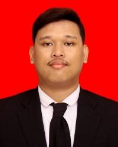

Reynold Andika Nugroho.
Saya lulusan Ekonomi Syariah UIN Syarif Hidayatullah Jakarta yang saat ini magang sebagai Staff Manajemen Risiko di PT Asuransi Kredit Indonesia.
Berpengalaman di klaim asuransi syariah, administrasi operasional, dan sertifikasi halal UMKM — teliti pada data, berorientasi pada hasil.

Tentang Saya
Selama masa kuliah saya aktif berorganisasi dan berkolaborasi, yang membentuk saya menjadi pribadi yang profesional. Pengalaman magang di lembaga UMKM berbasis halal dan industri keuangan syariah memperkuat wawasan saya terkait manajemen bisnis, analisis data, dan kerja yang berorientasi pada hasil. Dalam pekerjaan, saya terbiasa memecahkan masalah dan berpikir ke depan untuk menghasilkan pekerjaan yang baik dan berkualitas tinggi.
- Lokasi:Cengkareng, DKI Jakarta
- Pendidikan:S1 Ekonomi Syariah, UIN Jakarta (IPK 3.81)
- Saat ini:PT Asuransi Kredit Indonesia
- Bidang:Manajemen Risiko, Asuransi Syariah
- Bahasa:Indonesia, English, Arabic
- Minat:Keuangan Syariah, Industri Halal, Event
Pendidikan
S1 Ekonomi Syariah
Lulus dengan IPK 3.81. Aktif di organisasi kampus (KSEI LiSEnSi dan HMPS Ekonomi Syariah) serta terlibat dalam proyek Pusat Pengembangan Ekonomi dan Keuangan Syariah.
Pengalaman
Staff Manajemen Risiko Magang
- Mengidentifikasi potensi risiko operasional, finansial, hukum, reputasi, hingga risiko kepatuhan.
- Menyusun matriks profil risiko dan Risk Register secara berkala untuk setiap divisi.
- Mengadakan sosialisasi dan pelatihan internal untuk membangun budaya sadar risiko (risk awareness culture).
- Menyusun serta merekomendasikan rencana aksi dan mitigasi untuk meminimalkan dampak risiko.
Staff Klaim Magang
- Mengelola 400+ administrasi input dan verifikasi data nasabah yang mengajukan klaim.
- Mendukung proses pencairan melalui administrasi dan koordinasi internal sesuai regulasi dan SOP syariah.
- Menyiapkan dan memvalidasi dokumen, serta mengelola tindak lanjut administrasi tim klaim.
- Menganalisis kondisi nasabah berdasarkan dokumen dan merekomendasikan keputusan kepada atasan.
Staff Klaim Magang
- Mengelola 250+ administrasi input dan verifikasi data nasabah yang mengajukan klaim.
- Mendukung proses pencairan melalui administrasi dan koordinasi internal sesuai regulasi dan SOP syariah.
- Menyiapkan dan memvalidasi dokumen, serta mengelola tindak lanjut administrasi tim klaim.
- Menganalisis kondisi nasabah berdasarkan dokumen dan merekomendasikan keputusan kepada atasan.
Wedding Organizer Freelance
- Memimpin pelaksanaan acara pernikahan dengan tingkat kelancaran hingga 90% sesuai rundown dan kepuasan klien yang tinggi.
- Mengkoordinasikan tim WO dan lebih dari 10 vendor per acara sehingga persiapan berjalan tepat waktu.
- Membangun komunikasi efektif dengan klien yang mendorong kepercayaan dan rekomendasi klien baru.
- Menangani kendala teknis di hari H dengan cepat tanpa mengganggu jalannya prosesi.
Staff Administrasi Magang
- Mengelola, memverifikasi, dan menganalisis 200+ dokumen UMKM yang mengajukan sertifikasi halal.
- Melakukan survei kelayakan bisnis kepada 30+ UMKM terkait kesiapan pengajuan sertifikasi halal.
- Mengidentifikasi bahan dan proses pembuatan produk UMKM calon pemohon sertifikasi halal.
- Mengadakan pelatihan dan edukasi kepada 50 pendamping serta UMKM halal.
Keahlian
Gambaran singkat keahlian yang saya bawa ke setiap pekerjaan.
Proyek, kegiatan & publikasi
Mari terhubung.
Saya terbuka untuk peluang di bidang administrasi, operasional, manajemen risiko, dan keuangan syariah. Silakan hubungi saya melalui form, email, atau WhatsApp.
- +62 899-9274-538
- Lokasi
- Cengkareng, DKI Jakarta